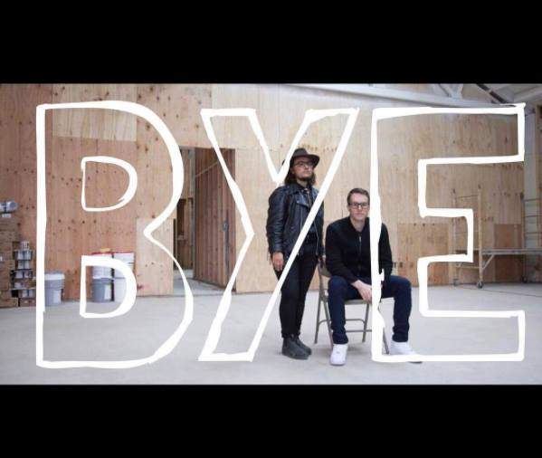

In 2014, two former CalArts students, Jules Gimbrone and Barnett Cohen, launched PSSST in a former industrial space only a few blocks from the Pico Aliso housing project. The galleries popping up around the neighborhood were just starting to garner national and international attention. With the planned renovation of the Sixth Street Bridge and rumors that the city would take that opportunity to expand the Arts District across the river, residents of Boyle Heights—some of whom had already been fighting to protect their homes for over 30 years—and members of the housing justice, queer, and arts communities were alarmed.

Some investigation revealed that the building had recently been purchased by an undisclosed investor, who dropped over a million dollars into the procurement and renovation of the former warehouse. Included in the agreement, as described by PSSST founders (at an initial forum held at the gallery about the contested space), this arrangement was allowing the gallery to use the space for four years. This seemed to suggest that whoever purchased the building intended to use those four years as a bridge to grow their property value, using the cachet and draw that arts venues generate, anticipating the arrival of a new “arts district” and the increasing property values sure to follow. Many of those involved in opposing PSSST had enough life and organizing experience to recognize its arrival as a form of public relations that did nothing to alter the structural realities the gallery would be setting in motion.
Some of those structural realities began before the gallery opened, as the gallery garnered enthusiastic press in the New York Times, now archived under the headline “Boyle Heights Gallery Scene Is Still Growing.” This uncritical style of reporting new, highly elite enterprises, without examining any counternarrative, repeats itself as a method of hyping real estate investment, rather than being any type of journalism. PSSST’s mission was sold to the Art & Design section readership as a kind of social justice project steeped in identity politics, inviting QTPOC artists to show their work to an art world audience down the block from some of the only remaining public housing in Los Angeles. Long-standing residents who had fought for decades to improve living conditions in the neighborhood were not fooled.
Community meetings were held at Union de Vecinos, and at PSSST as well, and questions were posed to the two co-founders, with no transparency gained. Resistance to the opening of PSSST continued because of this lack of transparency and unwillingness on the part of the co-founders to be accountable to the deep contradictions between the language used to promote the space, and the actual impact that such a space can have on the housing market and on the life of a low-income community already facing the rising pressures of evictions, development and the Los Angeles housing market.
At a community meeting in the Pico Aliso Houses convened by BHAAAD and Defend Boyle Heights, PSSST was seen clearly by the community for what it was: an investment vehicle, which should be seen only secondarily as a “Cultural Institution.” Further, the branding of the building as a cultural institution seemed to be the investment strategy. This convergence of a social-justice window dressing and cultural-space-as-investment-strategy galvanized a coalition of Boyle Heights residents and activists from many neighborhoods to launch a campaign demanding the gallery abandon its mission. This public campaign of education, organizing, and action insisted that the primary effects of this space, regardless of artistic programming, could not be separated from its structural impact as an investment property and would only serve to drive up property values and directly contribute to raising hype, investment, and rents in the surrounding residential neighborhoods. In many ways, the successful organizing against PSSST was the beginning of a new, intergenerational, militant approach to resisting artwashing.
Additionally, one of the founders also worked as a real estate agent for Clint Lukens Realty, revealing the connection between art development and the real estate market at the heart of the project. Further, the gallery used the language of social justice to rationalize their space as something benevolent, not deleterious to the residents. The gallery closed its doors in February 2017.